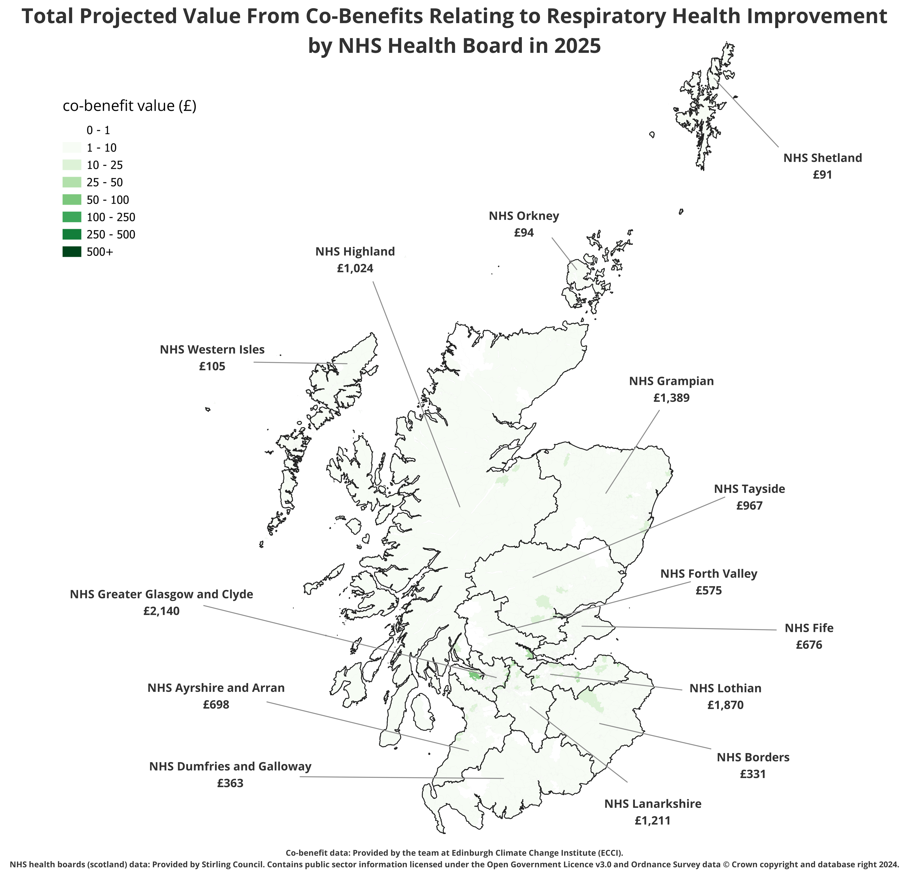

Skip to main content
Climate Action For Improved Respiratory Health: Mapping Benefits Across Scotland’s NHS Boards
Temporal Map

Year:
2025
Year selection and playback controls
Select year
Use left/right arrow keys to move year. Press Home/End to jump.
⏮ Start
◀ Previous
Next ▶
End ⏭